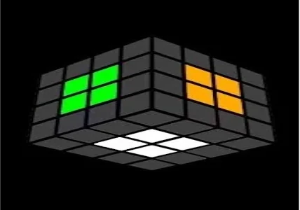
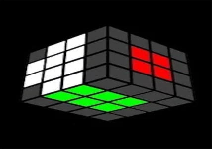

Speed solving metoda pro skládání kostek větší jak 3x3. Vhodná jak pro začátečníky, tak pro pokročilé. Nejsilnější stránka redux je absolutní svoboda co se týče skládání středů.
Přejít na detail
Speed solving metoda pro skládání kostek větší jak 3x3. Vhodná jak pro začátečníky, tak pro pokročilé. Nejsilnější stránka Yau je párování hran.
Přejít na detail